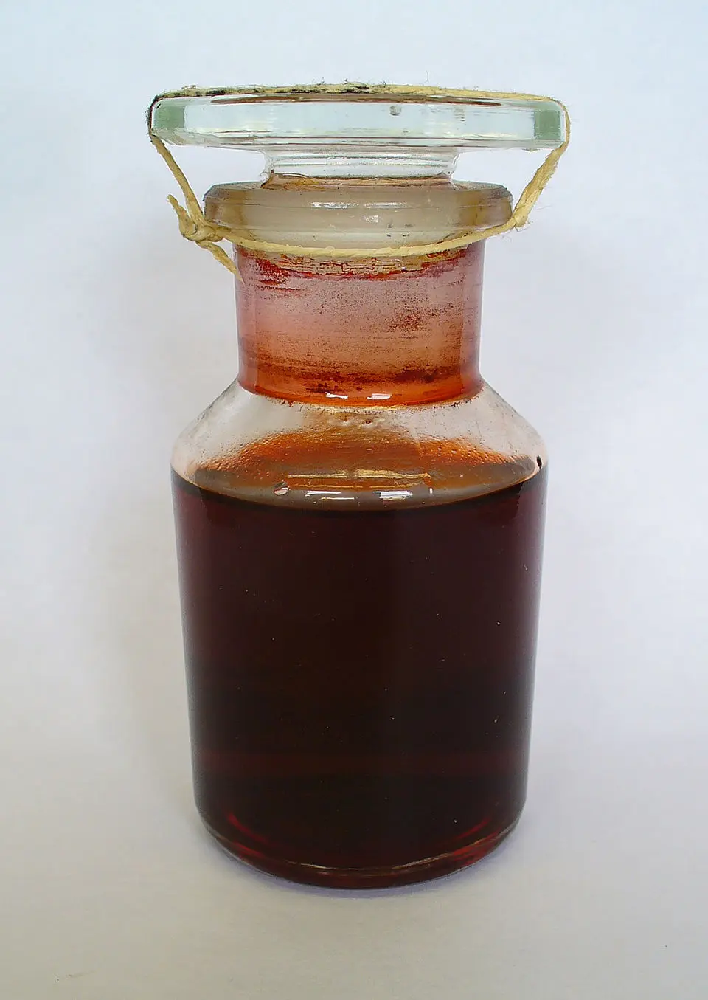

El carmín no es solo un color; es un registro de blindaje químico. Durante siglos, este rojo tuvo un alto precio, un sacrificio de escala industrial: millones de cuerpos sometidos a la presión, triturados bajo el sol del desierto para liberar una gota de sangre, ácido carmínico.
Piratería Silenciosa
Un altar que hoy cuenta con cimientos de polvo. La biotecnología opera una piratería silenciosa. El secreto de la sangre del desierto ha sido extraído, dejando el verde nopal para pasar al frío acero inoxidable.
Trascendiendo al verdugo y al insecto, aprendemos a falsificar el rojo, obligando a una levadura a sangrar un código que antes solo le pertenecía a la hostilidad del desierto.
La Refinería del Desierto
El Dactylopius coccus no es un simple habitante del desierto, es un complejo sistema que se escuda en un blindaje de cera blanca. Este aparente parásito que se posa sobre el nopal es, en realidad una refinería que dedica 20% de su peso seco a la producción de un arma química, un metabolito de defensaArma química de alto coste energético. El organismo desvía sus recursos para sintetizar este compuesto diseñado exclusivamente para repeler ataques y asegurar su supervivencia..
Un poliquétidoMacromolécula letal forjada mediante la unión secuencial de bloques de carbono. Su arquitectura funciona como una barrera biológica intransigente. que no es un adorno, es un veneno diseñado para arrebatar a cualquier depredador de su apetito. La grana cochinilla produce una anomalía biológica, síntesis de poliquétidos en maquinaria animal, algo que se pensaba reservado para plantas y microbios.

Fotografía por H. Zell / CC BY-SA 3.0
Ingeniería Enzimática
La producción se inicia con la enzima PKS (poliquétido sintasa). Una máquina que se encarga de ensamblar bloques de Acetil-CoA y Malonil-CoAMoléculas de alta energía que funcionan como el acero celular. Son los bloques fundamentales que la maquinaria empalma, uno por uno, para forjar el ácido carmínico. con delicada precisión; forja enormes cadenas que se doblan como origami al interactuar con ciclasas, oxidándose en el esqueleto del rojo, ácido kermésico.
Para evitar el colapso por saturación y baja solubilidad, el D. coccus realiza un último ajuste, usando una pieza de su infraestructura, la enzima DcUGT2. Esta toma la molécula base y le solda una glucosa simple. Nace un arma, el ácido carmínico. Una producción biológica que resulta en un estable y poderoso tinte, capaz de sobrevivir a la caída de imperios y el desgaste del tiempo.
Sangre sin Cuerpo
Hoy, la biotecnología ha dado un paso al costado de la masacre priorizando la industria. Hemos robado el código genético del desierto para forzarlo en bacterias y levaduras, sus nuevos huéspedes. Organismos que ahora son esclavos metabólicos, obligados a sangrar carmín dentro de tanques de fermentación.
El acero inoxidable sustituye al nopal, transformando la matanza en un flujo de producción industrial.
"El tinte ahora es sangre artificial. Un reactor como corazón para sangre sin cuerpo. Acero que aprende de la vida, conservando el rojo y dejando de apuñalar su origen."
Archivo y Referencias Bibliográficas
- "On the biosynthetic origin of carminic acid". Insect Biochemistry and Molecular Biology (2018).
- "Characterization of a membrane-bound C-glucosyltransferase responsible for carminic acid biosynthesis in Dactylopius coccus Costa".
- "Production of Carminic Acid by Metabolically Engineered Escherichia coli". JACS (2021).
- "De novo biosynthesis of carminic acid in Saccharomyces cerevisiae". Metabolic Engineering (2023).